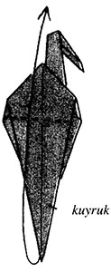
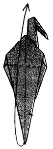

Hazırlayan: Gay Merrill Gross
Şimdi Sadako’nun yaptığı origami turnanın aynısını nasıl yapacağınızı göstereceğiz.
Origami turna için gereken malzemeler:
Turnayı yapmak için 15 cm x 20 cm ebatlarında kare şeklinde ince bir kâğıda ihtiyacınız olacak.
Kâğıdınızın sadece bir tarafı renkli ise, kuşu yapmaya renkli tarafından başlayın.
1.
Origami’yi her zaman sert ve düzgün bir yerde yapın.
Kâğıda üçgen şekli vermek için köşeden köşeye ikiye katlayın.
2.
Katladığınız yere iyice bastırın,
... sonra kâğıdı açarak yine kare şekline getirin.
3.
Kâğıdı dikkatli ve düzgün katlayın. Köşeleri birleştirip kâğıdı tekrar ikiye katlayın.
4.
Katladığınız yerler iyice belirgin olsun.
Sonra katladığınız kâğıdı açıp kare haline getirin.
5.
Kâğıdın renksiz tarafını çevirin.
... ve şekil 6’da gördüğünüz gibi biçim verin.
Kâğıda dikdörtgen şekli vermek için kâğıdın bir kenarını diğer kenarına kapatın.
7.
Katladığınız yere iyice bastırın ve tekrar açıp yine kare şekline getirin.
8.
Şimdi yukarıdaki kenarı aşağıdaki kenara doğru katlayın. Bu sefer kağıdı açmayın.
9.
Her iki elinizde kenarları (resimde gördüğünüz gibi) tutun ve ellerinizi aşağı doğru çekin.
10.
Dikkat edin ellerinizi aşağıya çekerken kağıdın ön ve arka katlarının ortası birbirinden ayrılıyor. Ellerinizi birlikte aşağı doğru çekmeye devam edin, ta ki...
11.
... kağıdınız şemsiye şeklini alana kadar. Ve kağıdınızın dört üçgene ayrıldığını göreceksiniz. Sağ ve sol taraflardaki ikişer üçgeni birleştirin. Kağıdınızı düzeltin ve katlanmış olan kenarları iyice belirginleştirin.
Birçok kat olan kare şekline Preliminary Base (Başlangıç Tabanı) adı veriliyor. Bu, yüzlerce origami figürünün başlangıcı oluyor.
12.
Sağdaki ve soldaki açık kenarları (sadece ön kanatlar) ortadaki kat çizgisine doğru katlayın. Kat yerini iyice bastırarak belirginleştirin.
Kontrol noktası:
Yaptığınız koni şeklinin noktalı kısmının dibinin Başlangıç Tabanının açık olan ucunda bulunduğundan emin olun.
13.
Şimdi baklava şeklinin arka planının üstünde dondurma konisi görüyorsunuz. Üstteki üçgeni aşağıya, koninin üstüne katlayıp kata iyice bastırın.
14.
Koniyi meydana getiren iki kanadı açın, fakat üst kısmı, 'dondurma' üçgenini aşağıya doğru katlayın.
Yaptığınız şeklin sonucunu görmek için her zaman bir sonraki şekle bakın.
15.
Öteki katları yerinde tutarken alttaki köşenin ilk katını yukarıya kaldırın. İlk katı yukarı kaldırırken ‘dondurma’ üçgenini de büyük bir ağız şekli görünceye kadar yukarı kaldırın.

16.
Büyük bir ağız şekli görünce uzun kenarları, var olan katlarla ortada birleştirmek için içe doğru katlayın.

17. 18.
Bu şekilde uzun bir baklava şekli meydana gelmiş oluyor. Kâğıdınızı düzeltin ve keskin noktalar oluşması için üstteki ve alttaki köşeleri düzeltin. Kâğıdı çevirin.
Bu kenarda 12'den 17'ye kadar olan adımları tekrarlayın.
19.
Bu baklava biçimindeki şekle Kuş Tabanı adı veriliyor. Üstteki iki kapak turnanın kanatlarını oluşturacak. Dipteki yarığın oluşturduğu iki ince kapak, turnanın boynu ile kuyruğunu meydana getirecek.
Boyunla kuyruğu inceltmek için (sadece öndeki katın) meyilli olan dış kenarlarını ortadaki yarığa hemen hemen değecek şekilde katlayın.
Kontrol noktası:
Yarık olan ucu incelttiğinizden emin olun (yani boyunla kuyruğu). Kanadın ucunu inceltmeyin.
20.
İşte elde ettiğiniz sonuç:

Kağıdınızı çevirin ve arka kısımda 19’uncu şekli tekrarlayın.
21.
Öndeki kanadı mümkün olduğu kadar aşağı doğru katlayın. Kağıdınızı çevirin, aynı şeyi arka kısma da uygulayın.
22.
Ön kanadın sağdaki yarısını yukarı kaldırın ve kitap sayfasını çevirir gibi sol tarafa yatırın. Bu, kanatlar arasında sıkışıp kalmış ince boynun ortaya çıkmasını sağlayacaktır.
23.
Boynu (uzun, ince ön kapağı) mümkün olduğu kadar yukarı doğru katlayın.
24.
Boynun başı oluşturması için uç kısmını aşağı doğru katlayın, kata iyice bastırın.
25.
Soldaki ön kapağı yukarı kaldırıp sağa doğru katlayın. Kanadı tekrar göreceksiniz. Boyunla baş düzgün olarak yarıdan katlanmalıdır.
26.
Başı dışarı ve yukarı doğru kaydırın. 27. şekildeki gibi başın üst kısmını aşağı doğru kıvırın.
27.
Ön kanadın sol yarısını yukarı kaldırıp sağ tarafa götürün. Bu, kanatlar arasında sıkışıp kalmış ince kuyruğun ortaya çıkmasını sağlayacaktır.
28.
Kuyruğu (uzun, ince ön kapağı) mümkün olduğu kadar yukarı doğru katlayın.

29.
En sağdaki ön kapağı yukarı kaldırıp sola götürün. Kanadı tekrar göreceksiniz. Bunun için kuyruğun düzgün bir şekilde yarıdan katlanması gerekiyor.

30.
Turnayı kanatların üstünde tutun, öteki elinizle boynu dışarı doğru kaydırın (Bir sonraki resmin pozisyonuna bakın). Boynun alt kısmına iyice bastırarak yerine koyun. (Boyun kanatların arasında saklanmış durumda). Aynı şeyi kuyruğu dışarı çekerek sol tarafa da uygulayın.
31.
Ön ve arka kanatları yavaşça yukarı kaldırın ve bunları kenarlarından yukarıya dönük açılara getirin.
32.
Turnanın vücudunu yassı olarak bırakabilir veya genişletebilirsiniz. Genişletmek için her iki elinizde kanadı vücudunuza yakın olarak tutun ve ellerinizle yavaşça, iki yandan çekin. Vücuduna yuvarlak bir şekil vermeye çalışın.
33.
Kağıt turnanız bitmiştir!
İsterseniz onu iple tavana asabilirsiniz. Turna kuşunuzu arkadaşlığın, iyi dileklerin ve barışın sembolü olarak görün.